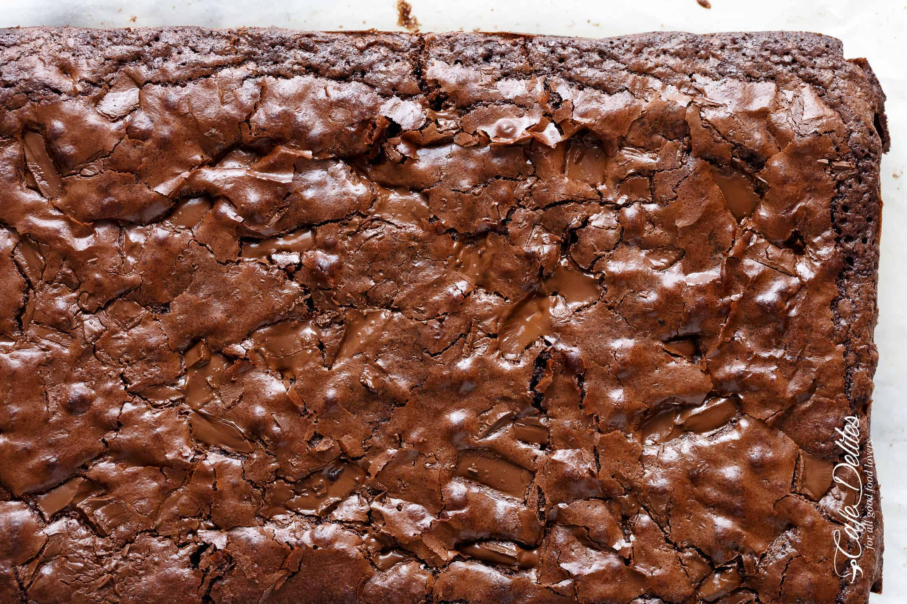

Fudgy Brownies

Description
Pure. Chocolate. Heaven. This brownie recipe guarantees that you will never go back to a boxed brownie mix, let alone try yet another brownie recipe
These are not only super fudgy, easy to make brownies that are ready to eat about 15 minutes after pulling them out of the oven (being careful NOT to burn yourself), each brownie comes full of melted chocolate lava chunks throughout. They are absolutely incredibly fudgy the next day AND the day after that, and even stay fudgy after freezing them OR eating them cold out of the refrigerator up to a week later.
Ingredients:
- 1 cup unsalted butter, melted and cooled
- 2 tablespoons vegetable oil
- 1 1/4 cups white sugar
- 1 cup packed light brown sugar
- 4 large room temperature eggs
- 1 tablespoon pure vanilla extract
- 3/4 teaspoon salt
- 1 cup all purpose flour
- 1 cup good quality, unsweetened cocoa powder
- 7 ounces roughly chopped chocolate
Instructions:
- Preheat oven to 350 degrees.
- Lightly grease an 8x12-inch baking pan with cooking oil spray. Line with parchment paper; set aside.
- Combine melted butter, oil, and sugars together in a medium-sized bowl. Whisk well to combine. Add the eggs and vanilla; beat until lighter in color.
- Sift in flour, cocoa powder, and salt. Gently fold the dry ingredients into the wet ingredients until just combined. Do NOT over mix.
- Fold in 3/4 of the chocolate pieces.
- Pour batter into prepared pan, smoothing the top out evenly, and top with remaining chocolate pieces.
- Bake for 20-25 minutes for just under-done brownies or until the center of the brownies no longer jiggles and is set to the touch.
- For firm well set brownies, bake for 35-40 minutes.
- After 15 minutes remove them from the pan and allow to room temperature before cutting.
Home